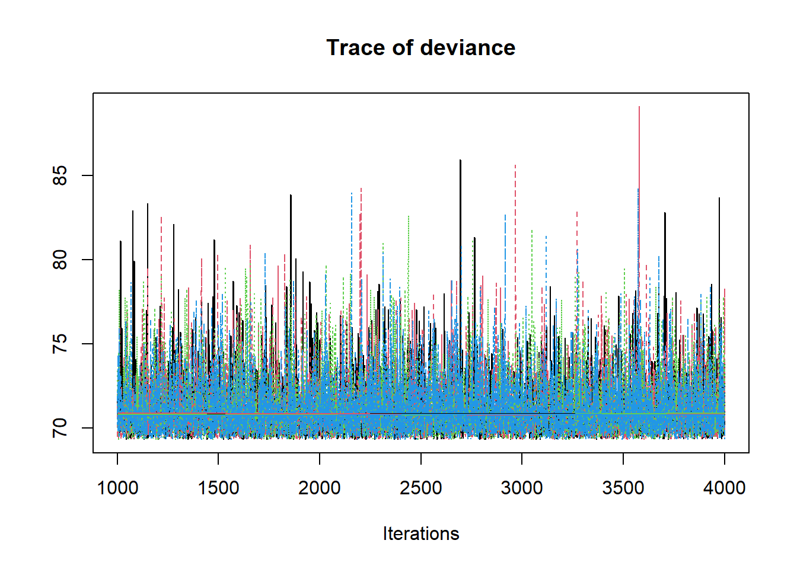
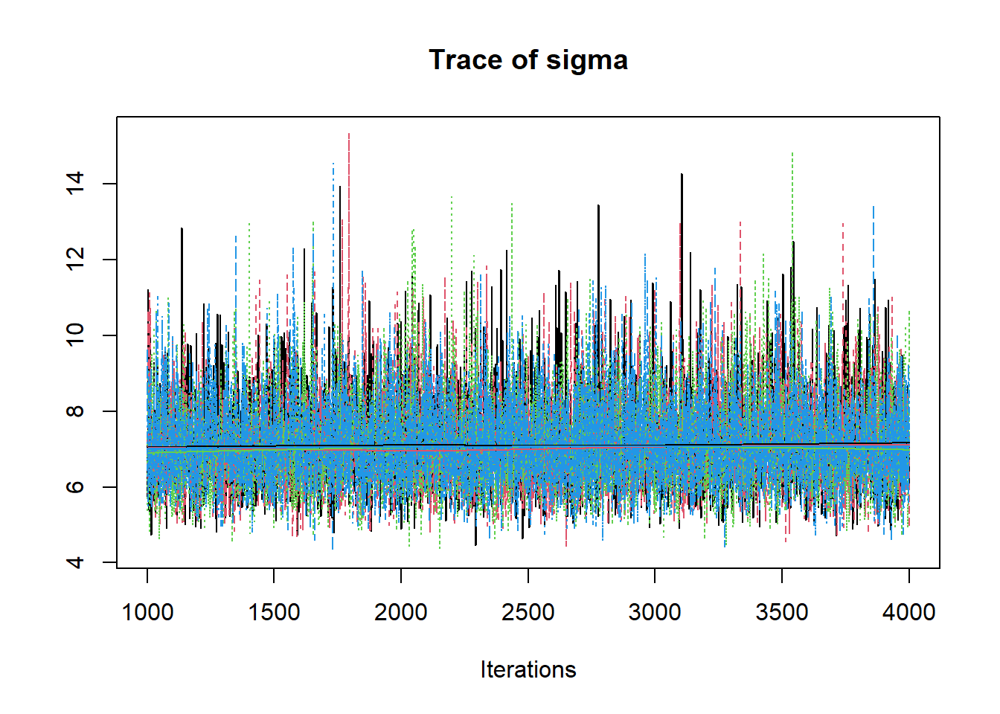
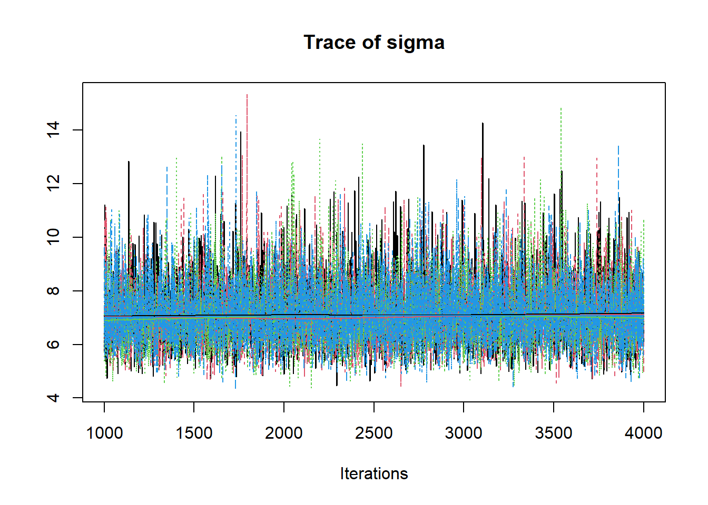
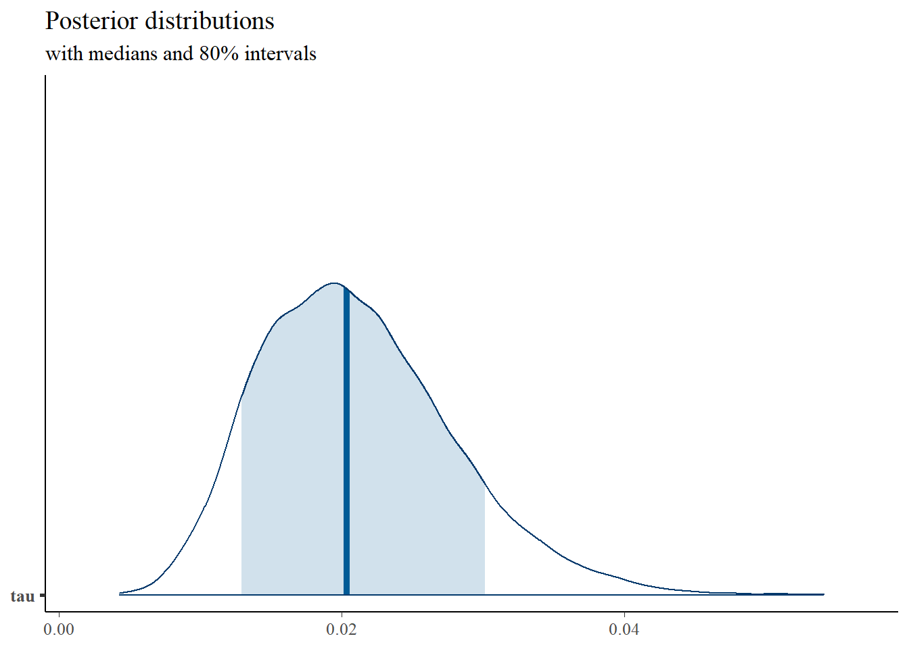
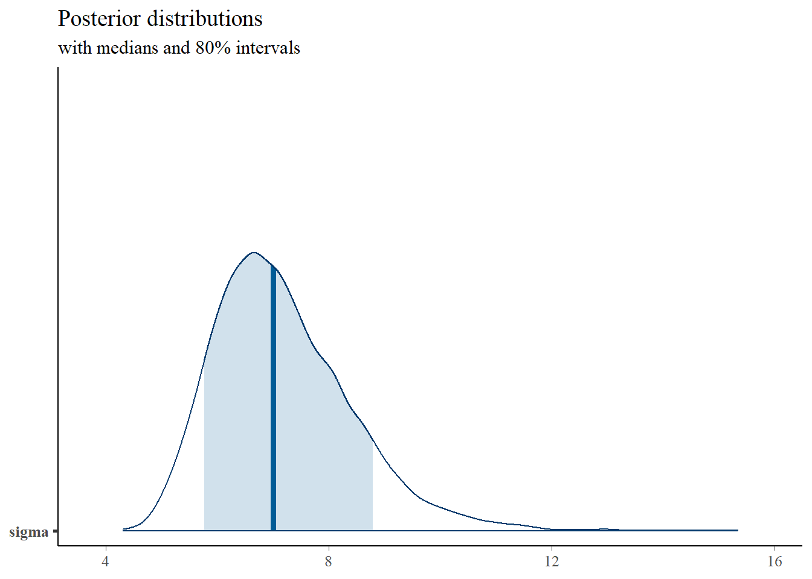
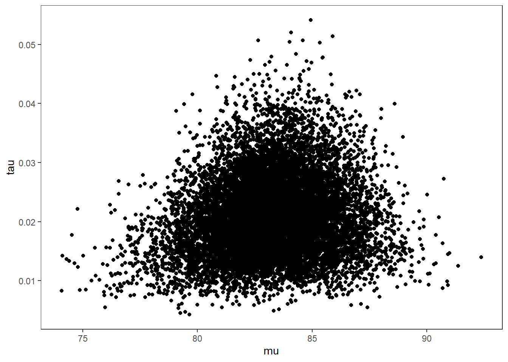

4.2 JAGS Model for mean and variance unknown (precision parameterization)
The model for mean and variance unknown for normal sampling.

Figure 4.3: DAG with for mean and variance unknown: Precision parameterization
Or, alternatively,
Figure 4.4: Model specification diagram for normal model with precision parameterization
Now for the computation using JAGS
# model code
jags.model <- function(){
#############################################
# Conditional distribution for the data
#############################################
for(i in 1:n){
x[i] ~ dnorm(mu, tau) # conditional distribution of the data
} # closes loop over subjects
#############################################
# Define the prior distributions for the unknown parameters
# The mean of the data (mu)
# The variance (sigma.squared) and precision (tau) of the data
#############################################
mu ~ dnorm(mu.mu, tau.mu) # prior distribution for mu
mu.mu <- 75 # mean of the prior for mu
sigma.squared.mu <- 50 # variance of the prior for mu
tau.mu <- 1/sigma.squared.mu # precision of the prior for mu
tau ~ dgamma(alpha, beta) # precision of the data
sigma.squared <- 1/tau # variance of the data
sigma <- pow(sigma.squared, 0.5) # taking square root
nu.0 <- 10 # hyperparameter for prior for tau
sigma.squared.0 <- 30 # hyperparameter for prior for tau
alpha <- nu.0/2 # hyperparameter for prior for tau
beta <- nu.0*sigma.squared.0/2 # hyperparameter for prior for tau
}
# data
mydata <- list(
n=10,
x=c(91, 85, 72, 87, 71, 77, 88, 94, 84, 92))
# starting values
start_values <- function(){
list("mu"=75, "tau"=0.1)
}
# vector of all parameters to save
param_save <- c("mu", "tau", "sigma")
# fit model
fit <- jags(
model.file=jags.model,
data=mydata,
inits=start_values,
parameters.to.save = param_save,
n.iter=4000,
n.burnin = 1000,
n.chains = 4,
n.thin=1,
progress.bar = "none")## module glm loaded## Compiling model graph
## Resolving undeclared variables
## Allocating nodes
## Graph information:
## Observed stochastic nodes: 10
## Unobserved stochastic nodes: 2
## Total graph size: 26
##
## Initializing model## Inference for Bugs model at "C:/Users/noahp/AppData/Local/Temp/RtmpmAkVWG/model3e08768a69a1.txt", fit using jags,
## 4 chains, each with 4000 iterations (first 1000 discarded)
## n.sims = 12000 iterations saved
## mu.vect sd.vect 2.5% 25% 50% 75% 97.5% Rhat n.eff
## mu 83.253 2.225 78.720 81.811 83.295 84.735 87.512 1.001 10000
## sigma 7.194 1.241 5.238 6.311 7.036 7.881 10.101 1.001 5700
## tau 0.021 0.007 0.010 0.016 0.020 0.025 0.036 1.001 5700
## deviance 71.222 1.872 69.381 69.892 70.666 71.963 76.152 1.001 4800
##
## For each parameter, n.eff is a crude measure of effective sample size,
## and Rhat is the potential scale reduction factor (at convergence, Rhat=1).
##
## DIC info (using the rule, pD = var(deviance)/2)
## pD = 1.8 and DIC = 73.0
## DIC is an estimate of expected predictive error (lower deviance is better). 


# convert to single data.frame for density plot
a <- colnames(as.data.frame(jags.mcmc[[1]]))
plot.data <- data.frame(as.matrix(jags.mcmc, chains=T, iters = T))
colnames(plot.data) <- c("chain", "iter", a)
plot_title <- ggtitle("Posterior distributions",
"with medians and 80% intervals")
mcmc_areas(
plot.data,
pars = c("mu"),
prob = 0.8) +
plot_title


# bivariate plot
p <- ggplot(plot.data, aes(x=mu, y=tau))+
geom_point()+
theme_bw()+
theme(panel.grid = element_blank())
p
# I prefer a posterior plot that includes prior and MLE
MLE <- c(mean(mydata$x), 1/var(mydata$x))
prior_mu <- function(x){dnorm(x, 75, 50)}
x.mu <- seq(70.01, 100, 0.01)
prior.mu <- data.frame(mu=x.mu, dens.mu = prior_mu(x.mu))
prior_tau <- function(x){dgamma(x, 5, 150)}
x.tau <- seq(0.0001, 0.06, 0.0001)
prior.tau <- data.frame(tau=x.tau, dens.tau = prior_tau(x.tau))
cols <- c("Posterior"="#0072B2", "Prior"="#E69F00", "MLE"= "black")#"#56B4E9", "#E69F00" "#CC79A7"
p1 <- ggplot()+
geom_density(data=plot.data,
aes(x=mu, color="Posterior"))+
geom_line(data=prior.mu,
aes(x=x.mu, y=dens.mu, color="Prior"))+
geom_vline(aes(xintercept=MLE[1], color="MLE"))+
scale_color_manual(values=cols, name=NULL)+
theme_bw()+
theme(panel.grid = element_blank())
p2 <- ggplot()+
geom_density(data=plot.data,
aes(x=tau, color="Posterior"))+
geom_line(data=prior.tau,
aes(x=tau, y=dens.tau, color="Prior"))+
geom_vline(aes(xintercept=MLE[2], color="MLE"))+
scale_color_manual(values=cols, name=NULL)+
theme_bw()+
theme(panel.grid = element_blank())
p1 + p2 + plot_layout(guides="collect")